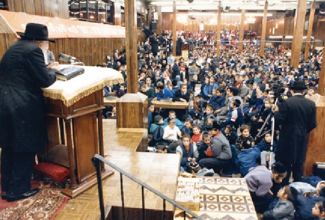

כיצד הומצא הניגון “אנו רוצים משיח עכשיו”? ולמה דווקא באנגלית? מה הקשר בינו לבין
כיצד הומצא הניגון “אנו רוצים משיח עכשיו”? ולמה דווקא באנגלית? מה הקשר בינו לבין “מלחמת הצבע”, ומה אמר הרבי על שיר זה? • סיפור של “ונהפוך הוא” מאחורי ניגון ציפייה לגאולה
כיצד הומצא הניגון “אנו רוצים משיח עכשיו”? ולמה דווקא באנגלית? מה הקשר בינו לבין “מלחמת הצבע”, ומה אמר הרבי על שיר זה? • סיפור של “ונהפוך הוא” מאחורי ניגון ציפייה לגאולה

סיפורו של ניגון: מאהדה דקליפה לאהדה דקדושה
הניגון “ווי וואנט משיח נאו”, באנגלית, במקורו הוא ‘אתהפכא’ של שיר שבא מבחוץ, ממש אתהפכא של “שטות דקליפה” ל”שטות דקדושה”, ומעשה שהיה כך היה:
בשנת תש”ל המציא אזרח אמריקאי “אקדח צבע”. זהו אקדח שיורה צבע ומשאיר סימן, למטרת סימון עצים, בעלי חיים וכדומה. על יסוד פטנט זה של אקדח הצבע, המציאו כמה שנים לאחר מכן, את משחק ה”פיינטבול” (“כדור צבע”). במשך שנים משחק זה היה להיט גדול, ואחת הסיסמאות במחנות קייץ היתה בשיר הזה: “חניכים, חניכים, אל תדאגו, תהיה מלחמת צבעים השנה! אנו רוצים מלחמת צבעים! אנו רוצים מלחמת צבעים!”.
)campers campers have no fear there will be color war this year, we want color war we want color war(.
בקעמפ “גן ישראל” שהתקיים במוריסטאון בשנת תש”מ, התקיימה לשמחת הילדים מלחמת צבע האטרקטיבית. אך כיוון שהקעמפ הוא קעמפ חסידי, היה צורך לחנך את הילדים ברוח אחרת, בלהט שונה מן הלהט של הגוים. לשחק - אפשר לשחק, ילדים זה ילדים, אבל להחדיר בהם להט ואהדה למשחק - זה כבר יותר מדי.
הממונה על ‘מלחמת הצבעים’ בקעמפ באותה שנה היה ר’ דוד קאנטאר מלונדון, שידוע בכישוריו לכתיבת שירים וחרוזים. הוא החליף את מילות השיר פתיחה למלחמת הצבעים, במילים אחרות. במקום “תהיה מלחמת צבע השנה”, הוחלף ל”משיח יהיה כאן השנה”, במקום “אנו רוצים מלחמת צבע”, “אנו רוצים משיח עכשיו”. האהדה למשחק הפכה לאהדה למשיח. במקום “לא מוותרים על משחק”, נהיה “לא מוותרים על משיח”!
המילים הולבשו על ניגון שמחה חב”די ידוע (אפשר לשמוע אותו כניגון אחרי מאמר של הרבי בי”ט כסלו תשכ”ט, יותר מ–10 שנים לפני כן), וכך נולד השיר.
השיר במתכונת החדשה נתפס במהירות רבה גם מחוץ לקעמפים. בשלב כלשהו שונתה המילה הראשונה בשיר, ובמקום “חניכים” (משתתפי הקעמפ), נכנסה המילה “עם ישראל” - “עם ישראל אל דאגה, משיח יהיה כאן השנה”, וכך שייכו את השיר לכל יהודי בעולם.
הניגון אצל הרבי: ניגון חובה לצבאות ה’
מספר חודשים לאחר מכן, בכינוס צבאות ה’ הראשון שהתקיים בכ”ח בתשרי תשמ”א, ניגנו הילדים יחד את השיר, וכך, במהלך השנים הפך להמנון של תנועת הנוער צבאות ה’, כאשר הסיסמא “ווי וואנט משיח נאו”, אף מופיעה על סמל הארגון.
בכנס ילדים שהתקיים בי”א אלול תשמ”ח, כאשר שכחו לשיר את השיר, שאל הרבי למה לא שרו את השיר, והורה לנגנו - מה שמלמד עד כמה שיר זה חשוב ובעל ערך בעיני הרבי. היו פעמים שהרבי עצמו החל לשיר את הניגון (שבתות פרשת וישלח ופרשת צו תשמ”א).
משמעות סיפור האתהפכא
הסיפור על “מלחמת צבע” מזכיר את הייעוד של “וכתתו חרבותם לאתים”. האקדח שנועד למלחמה, נהפך על ידי הגוים לכלי משחק. אף החיילים בצבא משתמשים באקדחים כאלו לאימוני ירי, ככלי נשק שאיננו מזיק ואיננו מסוכן.
גם בדורות הקודמים היו מארשים צבאיים שחסידים הפכום לניגונים חסידיים, אך בעוד שבדורות הקודמים הייתה מודגשת יותר המלחמה, הרי שבדורנו מדובר ב”כי תצא למלחמה” - מלחמת רשות, מלחמה הגורמת שחוק ותענוג אצל הקב”ה. כך הניגון ממלחמת הצבע, שמבטא את גודל התשוקה למשחק, שלא מוכנים לוותר על המשחק, מבטא אצל עם ישראל את האמירה שאיננו מוכנים לוותר על הקניגיא שהקב”ה הולך לעשות עם לווייתן ושור הבר.
פרפראות לניגון מדברי הרבי
במהלך אותה שנה, תשמ”א, התייחס הרבי לא פעם לניגון “ווי וואנט משיח נאו”, וביאר כמה נקודות בשייכות לניגון. למשל, מדוע שרים את הניגון דווקא באנגלית, שפת המדינה, ולא בלשון הקודש?
וכך הסביר בשבת פרשת וישלח - שהשיר מושר באנגלית כדי שגם הגוים ישמעו ויבינו. כמה שבועות לאחר מכן, בשבת פרשת בא, דיבר הרבי על כך שיש לזה תועלת גם ליהודים: כדי שיבינו את הניגון “כל אשר בשם ישראל יכונה”, עוד לפני שילמדו לשון הקודש.
בשבת פרשת צו אותה שנה, הרבי אף למד הוראה מכך ששרים את הניגון באנגלית עבור אלו שיודעים לשון הקודש, והתעכב על המילה “נאו” (באנגלית - עכשיו), שהיא גימטריה של השמות א–ל הוי’, הרומזים לחסד שלמעלה מהשתלשלות שנמשך למטה כפי שהוא למעלה, וגם בגימטריה “זן”, שמבחינה זו יצאת השפעה בגשמיות וברוחניות לכל העולם כולו.
כמו כן הרבי דיבר על כך שישנה מעלה בשירת הילדים (צבאות ה’), מצד “כי נער ישראל ואוהבהו” - החביבות שיש כלפי ילדים גם בשמים, ו”הם הכירוהו תחילה” - המעלה שיש לילדים להכיר את הקב”ה, ואת הגאולה, עוד לפני המבוגרים. וכן אצל הילדים יש את המעלה של “הבל שאין בו חטא” - לא רק בדברי תורה אלא גם בניגון שהם שרים. הילדים שרים בתמימות, ללא כל חשבונות.
הרבי התייחס גם לעצם העובדה שמבקשים משיח דווקא מתוך ניגון: לא רק רוצים וחושבים על אודות משיח; לא מסתפקים באמירה של ניחותא שמחכים למשיח, אלא האמירה היא “בקול רעש גדול, ובקול שירה וזמרה ובלהט”.
ניגון כזה, שהרבי התייחס אליו פעמים רבות, ואף למד ממנו רמזים, עבורנו הוא בוודאי “ניגון מכוון”, ניגון שפועל לחזק אצל כל אחד את הציפייה למשיח, וגם אצל הקב”ה, שיביא לנו את המשיח “נאו”.